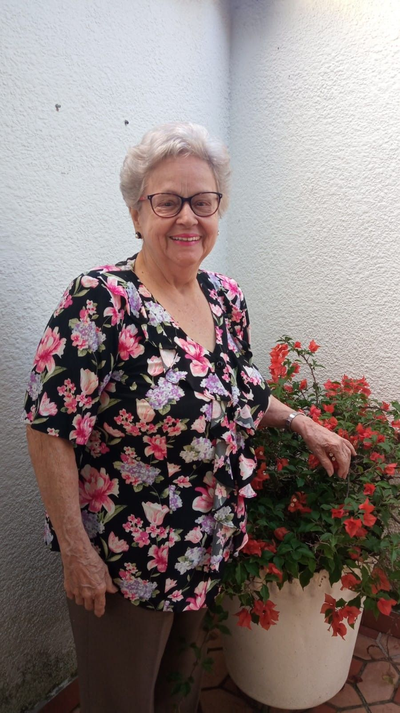

Dona Antônia enfrenta o Mal de Parkinson com bravura. Nossa missão é proporcionar a ela qualidade de vida, dignidade e o tratamento adequado para controlar os sintomas desta jornada.
Apoiar o Tratamento
Aos 78 anos, Dona Antônia, nossa eterna mestre dos bolos e dos abraços apertados, recebeu o diagnóstico de Parkinson. A doença trouxe tremores e dificuldades de locomoção, mas não tirou o brilho do seu olhar.
O tratamento para retardar o avanço da doença envolve uma rotina multidisciplinar intensa. Para que ela continue caminhando pelo seu jardim e segurando as mãos dos netos, precisamos de uma rede de apoio que sustente os custos médicos mensais.
Sua doação ajuda a custear as frentes essenciais do tratamento:
Fármacos essenciais para o controle da dopamina e redução dos tremores involuntários.
Sessões focadas em manter a marcha, o equilíbrio e a independência motora.
Exercícios vitais para preservar a fala e garantir a segurança na deglutição.
"O amor é o melhor remédio, mas a solidariedade é o que viabiliza a cura da alma."
Prestamos contas de cada centavo. O bem-estar da Dona Antônia é um compromisso público e familiar.
Não existe valor pequeno quando o objetivo é aliviar o peso de uma doença.
Chave PIX para contribuições:
urielsouza200126@gmail.comTitular: Uriel Souza | Instituição: Itaú Unibanco
Também aceitamos ajuda com fraldas geriátricas e suplementos.
Entre em contato conosco para combinar a entrega!